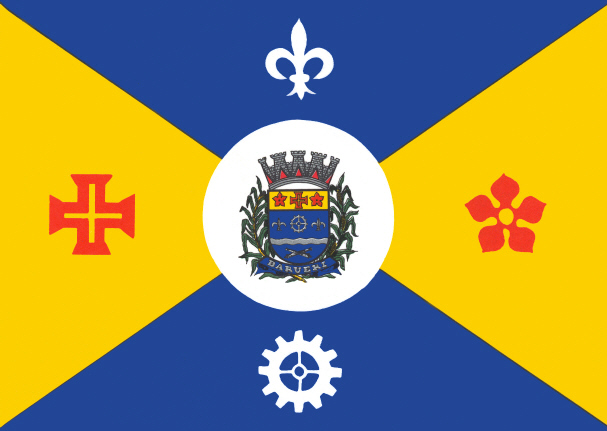

BANDEIRA DE BARUERI

HISTÓRIA DA CIDADE
Segundo os historiadores a origem da cidade foi o aldeamento de Barueri, fundado em 11 de novembro de 1560 pelo padre
José de Anchieta, que ergueu na margem direita do rio Tietê, pouco acima da confluência com o Rio Barueri Mirim, a
Capela de Nossa Senhora da Escada, hoje padroeira do município.
LOCAIS IMPERDÍVEIS PARA VOCÊ VISITAR EM BARUERI
- Parque Municipal Dom Jose
- Feira Noturna de Barueri
- Museu da Biblia
- Iguatemi Alphaville
- Arena Barueri
- Lago Orion
- Kartódromo Aldeia da Serra
- Scape Time Alphaville